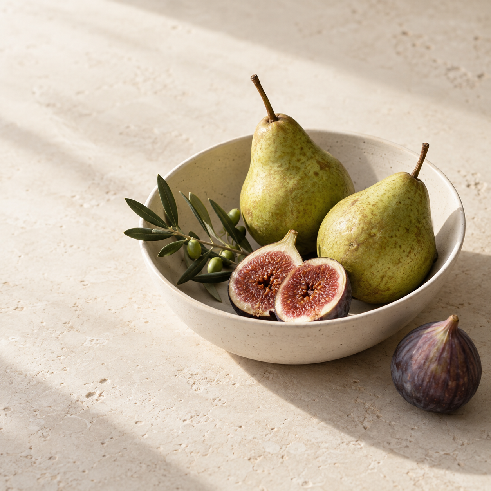

Quarta-feira, 23 de setembro
Hoje, Ana.

ALIMENTAR O QUE IMPORTA
O seu ritmo.
O seu cuidado.
Uma próxima escolha
possível para o seu dia.
Seu dia, em perspectiva
Cada registro conta uma parte.
2 de 5Sem pressa. Sem nota.
ÁguaAlimentaçãoSonoMovimentoIntestino